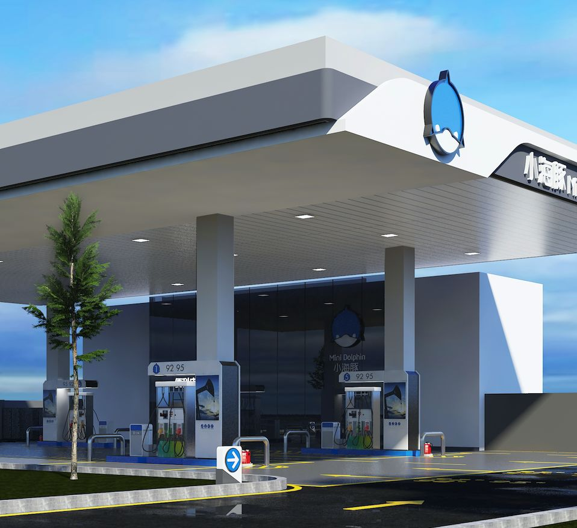

打造品牌就是运用营销手段来塑造品牌形象。品牌打造的好，就是品牌形象塑造的出色。严谨的说，品牌形象的打造有一个模式三条途径，这个模式就是“整合品牌营销”模式，三条途径就是导入“品牌形象识别系统”、“品牌推广运营系统”和“品牌管理控制系统”。只要按照这个模式运行，品牌形象就一定能够树立起来。不过，运用这个模式将是一个较大的品牌工程，就局域化而言，我们还可以运用一些具体的方法，这就是打造品牌时必要面临的一些内容。

首先我们要明白，品牌形象不是孤立存在的，他是由许多营销中的其它形象罗织起来的，如产品的形象，价格的形象等，它们都关系到品牌形象的建设。我认为至少有七条有关的形象在创建品牌时需要共同来打造，它们是“品质形象”、“价格形象”、“通路形象”、“广告形象”、“促销形象”、“顾客形象”和“企业形象”。我们就来研究一下如何建立这些形象。
如何建立品质形象
品质形象是品牌形象的基础。建立品质形象并不简单到只是提高一下产品的质量，关键是要建立起“良好品质”的印象。要从一开始就做到这一点，这十分重要。良好的第一印象是成功的一半。另外，产品需要改良的地方很多，我们要从何处下手呢?请记住，一定要先从能够“看上去就好”的地方下手。品质形象不能仅仅停留在“用了就说好”的层面上，要做到“看了就说好”才行。所以说，品质形象要有“看得见、摸得着、感得到”的改善才能满足打造品牌的要求。
如何建立价格形象
我们常用产品零售价格的高低来形容其价格形象，认为高价格就是好形象，价格低就是坏形象，这的确有失公允。应该说，价格的高低是相对而言的。在于同类产品的比较中，我们才有高低之别。在产品缺乏“看上去就好”时，订高价会有损品牌形象，消费者会问 “凭什么”。但当产品的品质形象建立时，订低价也会有损品牌形象，消费者会问“为什么”。所以我们认为，品质形象和品牌形象又是价格形象的基础。那些以成本定价者太保守，以利润定价者太感性，因此，“品质/价格”和“品牌/价格”的定价模式才更合乎打造品牌形象的一些需要。
如何建立通路形象
完整的销售通路是中间行销加上终端行销。中间行销指的是批发销售，终端行销指的是零售。通路的形象必须建立在零售商的基础上，亦即，零售商的形象就是我们的通路形象。在20世纪60年代，“索尼”电视进入美国市场的时候，起初在寄卖店里销售，于是美国消费者称之为“瘪三”产品。后来索尼公司认识到这是一种错误，下大气力把产品从寄卖店里收回，终于又摆到了鼎鼎大名的马希里尔百货公司的货架上，于是消费者纷纷购买。“索尼”的品牌从那一时刻才真正开始有了起色。
如何建立广告形象
做市场就要做广告，但做广告可不一定就能做好市场。卖产品就要做广告，但做广告可不一定就能卖出产品。造成这一尴尬结果的原因，很多情况是因为广告形象不好引起的。我们要建立广告形象，企业有二条可控制因素和一条不可控制因素。可控制的因素：一是选择大媒体做广告，二是进行大投入做广告。不可控制的因素：就是广告质量，包括创意和制作水平。简而言之，建立广告形象需要“二大一高”，即“大媒体、大投入、高水平”。媒体大、形象就大;投入大，形象就强;水平高，形象就好。其实就这么简单。
如何建立促销形象
销售促进是一种十分有效的市场推广手段。但它也是一柄两刃剑，弄不好也会伤及自身。由于品牌在打造过程中，需要经常使用一些促销技巧，品牌经理就必须仔细考虑哪些促销方法有可能损害品牌形象。我想“打折销售”是比较明确的一种损害品牌形象的促销方法。当然，“大甩卖”就等于把品牌扔进了泥潭。只要我们用心看一下，你不难发现，凡是那些与“降价”有关的促销方式对品牌形象的打造都是不利的。但有些事情也物极必反，“狠狠地降一回价”有时也可以引起一波市场革命。市场得以重新整理，地位可以重新排队。品牌的知名度和消费关注度也会有意想不到的提升。1996年3月中国的长虹彩电大降价18%即是如此，它的市场占有率当年上升了13.5% 。
如何建立顾客形象

济南海右博纳品牌营销咨询有限公司
Copyright 2001-2019 All Rights Reserved Sivibrand.
王伟品牌顾问微信